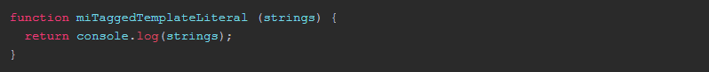

ES6 Tagged Template Literals
ECMAScript v6, the new version of the JavaScript standard, has brought many new features and one of them has gone unnoticed and I find it very interesting.
Template Strings
What is this? Well, they are just functions like any other, but they are different in the way they are called.
Imagine you have this function:
We could call it directly by passing the string with the inverted quotes, without using the parentheses () and it would return an array with the strings passed as a parameter.
Utility
And this so that it can be useful to me? It is a good way to use JavaScript and the power of ES6 to build templates. Let's see how:
If we combine the functionality of the template strings to be able to write in several lines, the rest operator and with the possibility of using this type of functions, we can create a function that manipulates this data and call it in this way:
And the function GeneTemplate would be something like this:
You can see this running in the next JSBin
This same functionality and much better implemented is what makes the JavaScript html library created by Max Ogden also creator of libraries like yo-yo similar to React but much simpler that instead of using JSX uses this functionality we have seen from the Tagged Template Literals and is also used in a very interesting little web framework called Choo